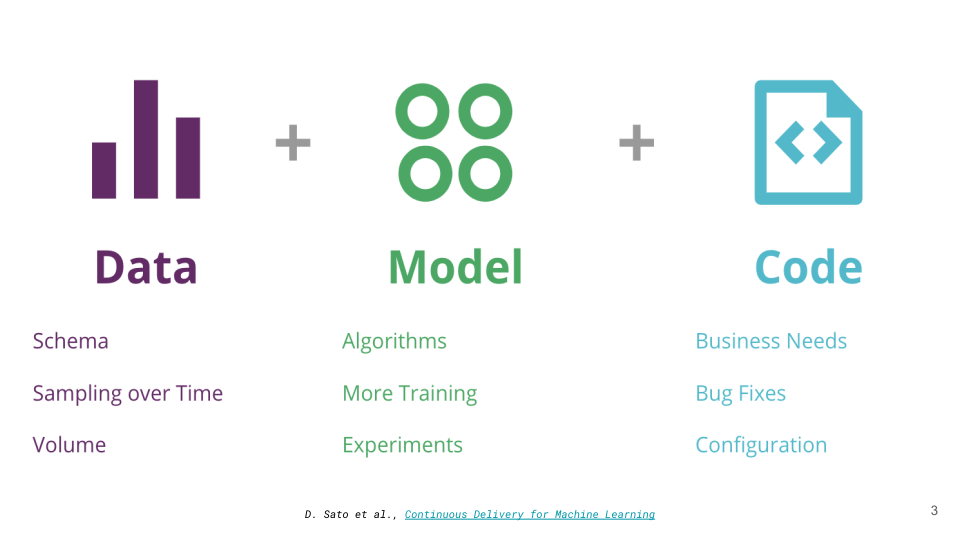
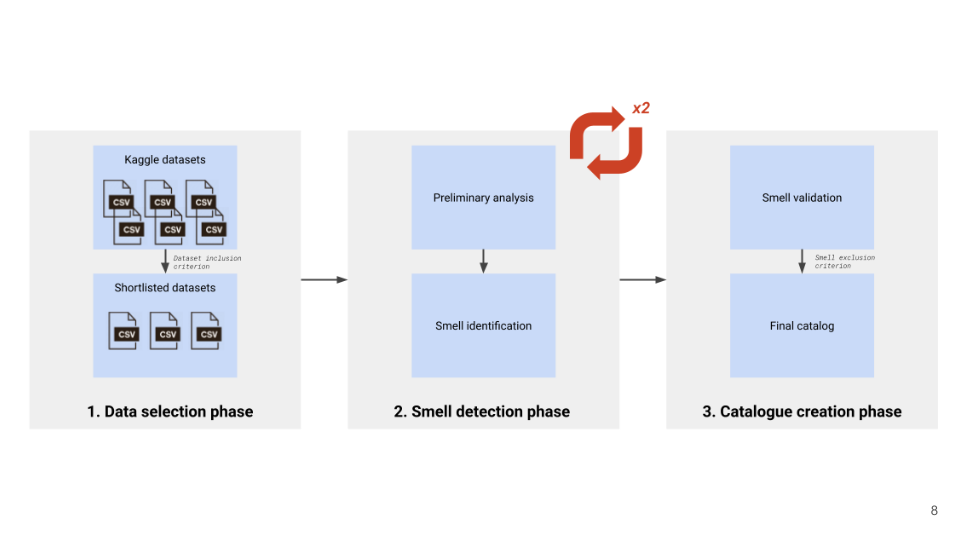
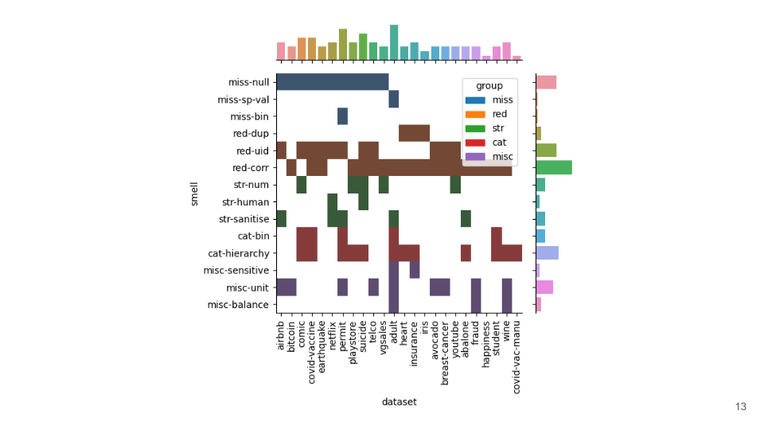
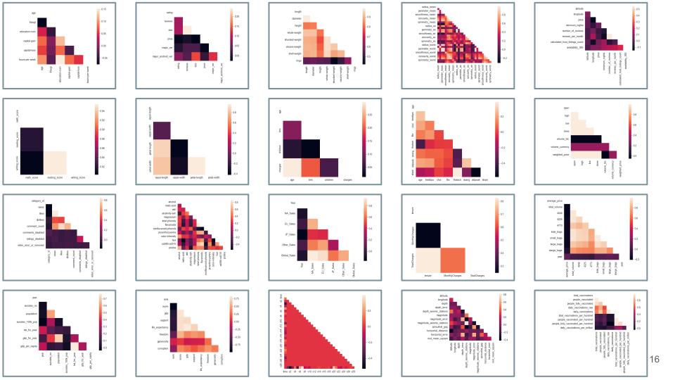
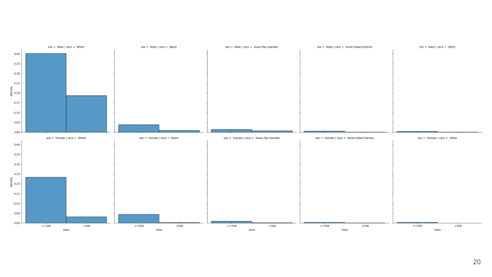
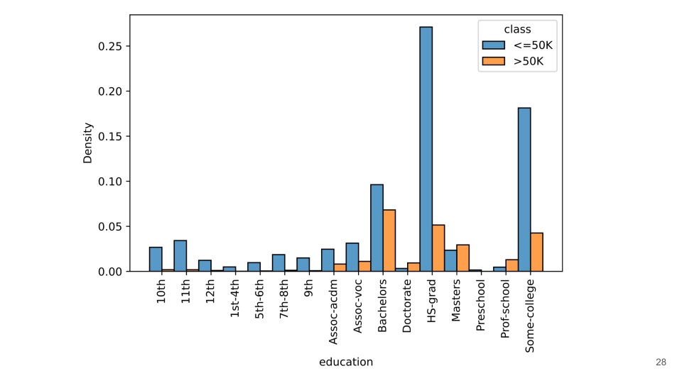
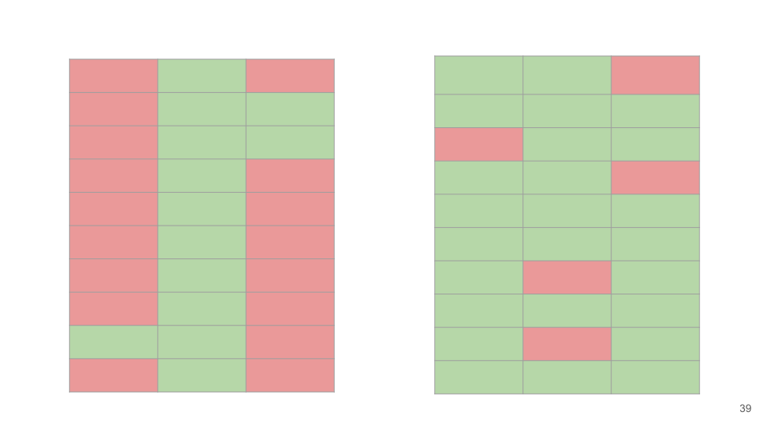
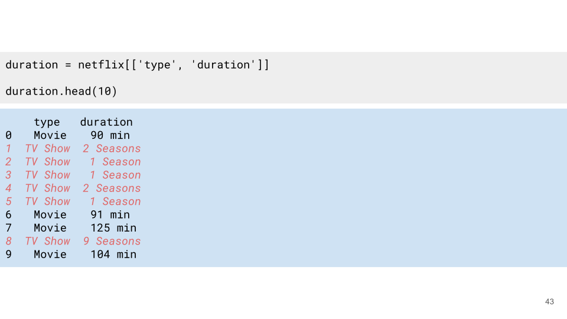

Data Smells in Public Datasets
2022-05-04
Introduction
In this talk I will present our recent paper titled Data Smells in Public Datasets which was published at the 1st International Conference on AI Engineering (CAIN) 2022. I will first present the problem we are trying to solve along with the contributions that we made. I will present the methodology which was followed along with the results obtained. I will present a select few smells which I personally find interesting & hope will generate some discussion. Finally, we will conclude the talk with some high level takeaways from our study along with the limitations & future directions of work.
Problem & Contributions

Compared to traditional software systems—which typically mature by experiencing change in the code—machine learning systems experience change in the code, model & data (see the figure above). These three pillars of change are tangled with one another, where a small change or bug in any part of the pipeline, ripples through to the downstream stages. Thus it becomes extremely important to catch such problems in the early, upstream stages of the ML lifecycle, which typically revolve around the data.
ML tends to be very data-centric in nature and majority of the work involves working with the data. When we put a software engineering lens on this, data for data science is equivalent to code for software engineering. While software engineers have several tools & techniques to aid them in their day-to-day lives, the same cannot be said for data scientists.
With this study, we wish to aid data scientists with their day-to-day tasks. In line with this motivation, we first identify the recurrent data quality issues that occur in popular public datasets. Our contributions here was to provide a formal definition of data smells which we define as data anti-patterns in the datasets that may indicate early signs of problems or technical debt. Our second research question was to analyse the prevalence of such data smells in public datasets. Here we contributed by creating a catalogue of 14 data smells by analysing 25 popular public datasets.
Methodology

As seen in the figure above, our methodology consists of 3 distinct phases.
We start with the data selection phase. We used Kaggle—a popular public data repository–to identify datasets for this study. We consider structured datasets with the most number of votes which are lesser than 1GB in size for this study.
Next we manually conduct a preliminary analysis of the datasets. This consists of observing the head, the tail & the descriptive statistics of the dataset, reading the data documentation when available and such. Through the preliminary analysis we identify the data smells. We conduct this phase twice to ensure that the older datasets are also tagged with relevant smells which were discovered during analysis of newer datasets.
Finally we conduct the catalogue creation phase. We hold all the data smells identified in the prior phase against a few exclusion criterion and create the final catalogue.
Results

The figure above is a two dimensional histogram with an overview of the “meta” analysis of the datasets & smells. The plot presents the datasets along the X axis and the smells along the Y axis which allows us to observe the most frequent smells and where they were recorded. The plot also consists of two marginal plots. The marginal plot along the Y axis presents a count of smells across all datasets while the plot along the X axis presents the count of smells in each dataset.
Catalogue
I will present 5 smells from the catalogue which I personally find interesting and hope will spark some discussion.
Correlated Features

I will start with the presence of correlated features smell which many of us are perhaps already familiar with. I want to start with this smell as it was most frequently observed in our sample of datasets.
When two features A & B are correlated, inducing a positive or negative change in A does the same in B. This presents an opportunity to perform feature engineering and construct a more efficient dataset. ML is highly experimental and any optimisation—no matter how smalls—counts. Small datasets ultimately are easier to understand, faster to train a model on & take up less storage.
Presence of Sensitive Features

I want to motivate this smell with this figure. This is a probability density plot from the adult census dataset. This dataset consists information regarding individuals including their race & sex. The supervised learning task is to predict the income class they belong to.
Lets focus primarily on the top left plot which shows that for this dataset, a male individual of fairer skin is likely to earn more. Such a bias also exist between male & female individuals of the same race. A model trained & tested on this dataset will perform well however putting such a model in production will result in devastating consequences since the model was trained using biased historical data which does not reflect the real world.
And we see examples of this in the real world, when financial institutes use ML to predict if an individual is entitled to a loan, or when the criminal justice system want to predict the severity of sentencing and when police try to identify if an individual is a threat using video surveillance.
Hierarchy from Label Encoding

The figure above presents a probability density plot from the adult census dataset. Here we compare the income class of individuals to their level of education. We can see that for this dataset, an individual with a higher level of education is likely to earn more.
Such a hierarchy in categorical features is useful information which can be utilised by the model. A common practise is to encode categorical features using numbers. As an example we can encode the education levels using numbers between 0 and 4, where higher education gets a larger number. Such an encoding scheme can be beneficial to the model as it exposes the hierarchy amongst the values of a categorical feature. However applying the same encoding scheme for the race or sex feature can introduce an unwanted hierarchy amongst the values where non should exist.
Binary Missing Values

Two features from the permit dataset contain a lot of missing values (over 90% of the data in these features are missing). A common technique in such cases is to drop such features since they do not impart any knowledge to the model. However, taking a closer look at the value of the non-missing data, we find that the missing values in these features carry an implicit meaning of ‘no’ or a negative response.
Attention must be paid to the distribution of the missing values. If the missing values are concentrated within a specific feature (along columns) as opposed to being evenly distributed across the dataset (along columns & rows), it may indicate that they carry an implicit meaning. A novice data scientist may hastily drop such features however in doing so they alter the original information portrait by dataset.
Strings in Human-friendly Formats

The netfix dataset contains information regarding content on the popular entertainment streaming service. The dataset contains information regarding movies & TV shows along with their duration.
Although the duration for movies can be easily converted to a numerical representation, doing the same for TV shows poses several challenges and requires further effort and domain expertise.
Discussion
In this section I will present two high level observations from this study.
Lack of Proper Documentation
We saw several instances where a lack of proper documentation was felt. The heart dataset contains very cryptic column names and understanding the information contained within these column require domain expertise. The sex feature within the same dataset is label encoded however we do not know which number represents which gender. The cancer dataset contains several numerical features but we do not know the unit in which the measurements were recorded.
Every dataset is unique & contains its own idiosyncrasies and we require proper documentation to understand them. Documentation provides useful metadata & context to data scientists who are getting started with a dataset & also help re-familiarise them to the dataset quickly when they come back at a later time.
Lack of Best Practices
We also found several instances of technical debt from lack of best practices in upstream processes. Going back to the netflix dataset where extracting numerical duration for TV shows was found to be challenging, or the heart dataset with its cryptic column names and the cancer dataset where the unit was not recorded. In all these instances, technical debt could have been avoided by simply using better column names or providing documentation. By following standardised procedures in the upstream data collection/creation stages, technical debt in the downstream stages can be avoided.
We feel that data smells can help identify such sources of technical debt in the early stages of a ML pipeline where the complexity is relatively lower, and fixes are cheaper and easier to implement. This becomes especially important when working with external stakeholders within financial constraints.
Limitations & Future Work
Lets take a look at the limitations of our current study and directions for future work.
Limitations
We opted for a shallow as opposed to a deep analysis of this datasets. This means that we did not fit a model to each dataset and carry out a supervised learning task. While such a workflow may reveal more smells, we believe that the smells also become specific to the dataset, model or problem we are trying to solve. Our intention was to pick the smallest subset of analysis tasks that can be scaled across several datasets.
The smells are linked to the version of the dataset analysed. Unfortunately this is true for all data-centric work. However we do our best to make our results reproducible by providing the version of the data that was analysed in our paper.
We do not know the impact of the smells. For instance, if we consider the missing units smell, we do not know if and to what extent this smell affects the performance of a model. This was considered beyond the scope of this project however remains to be a viable extension to our current work.
Finally, smells are subjective to the human. But this is true for code smells as well. Not all long methods are bad and god classes still exist in public software projects.
Future Work
Growing the catalogue using more datasets is a low-hanging fruit. It would also be interesting to explore the notion of smells for semi-structured and unstructured datasets. Finally, it would be interesting to understand the co-occurance and evolution of smells throughout the ML lifecycle.